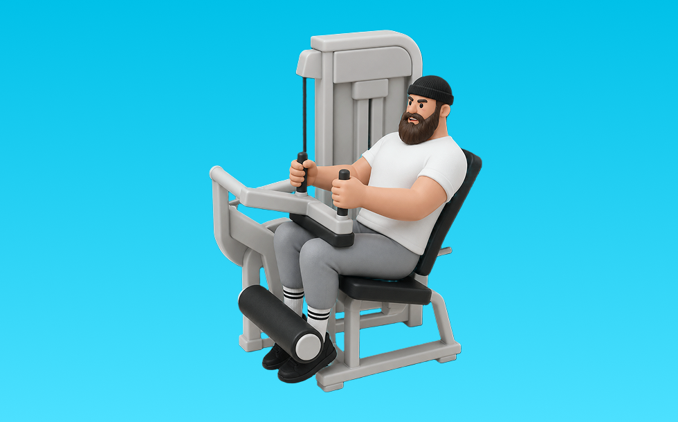

レッグエクステンション

レッグエクステンションとは、マシンを使って「膝を伸ばす」動作で前もも（大腿四頭筋）を鍛える種目です。軌道が安定して狙った部位に効かせやすいのが特徴で、膝を伸ばして止め、ゆっくり戻す動作を繰り返します。下半身の筋力・筋量アップが期待できます。
- 対象部位
- 脚
- 器具
- マシン
- 記録形式
- 重量・回数
- 別名
- レッグエクステ
YouTube動画
-
【レッグエクステンションの正しいフォーム】大腿四頭筋に効くやり方やバリエーションを解説◎
-
【筋トレ】動画で解説！レッグエクステンション【脚トレ】
-
【トレ解説】お尻を浮かす意識は間違い！？股関節から効かせるレッグエクステンション徹底解説！
-
バキバキの脚を作る皆意外とできてないレッグエクステンション実演解説
-
【永久保存版】レッグエクステンション、このやり方で確実に脚が成長します!!【教えてジュラシック】
-
【ひざ痛対策に筋トレ】レッグエクステンションで膝周り集中強化する方法
-
レッグエクステンション基礎編使い方とポイント
-
レッグプレスのフォーム解説！膝・腰に負担をかけないフォームはコレだ！
-
筋トレ初心者が最初に覚えるべき脚トレのマシン使い方解説【エニタイムフィットネス】
-
レッグエクステンション気をつけたい脚の使い方
-
エニタイムフィットネス三田 レッグエクステンションマニュアル
-
【ジム初心者】レッグエクステンションで太ももに刺激を届けろ！【大腿四頭筋】
-
レッグエクステンションで行う四頭筋筋トレのやり方 55kg×20Rep 【1分間筋トレ解説シリーズ】
-
【迷ったらこれをやれ】日本3連覇・相澤隼人の脚を作った「本質のレッグエクステンション」2種。
-
レッグエクステンションの正しいやり方【下半身編 Part6】
-
【大腿四頭筋】蹴り上げろ！レッグエクステンションのコツ 【新・バズーカ岡田チャンネル】 #バズーカ岡田
-
【ボディメイクチャンピオン指導】レッグプレスの効果が出るやり方＆応用！フォームまで徹底攻略！ 5分
-
レッグエクステンション（トレーニング動画）
-
【たった16kgで十分!?】IFBB PRO 寺島式のレッグエクステンション。【大腿四頭筋トレ】
-
横川尚隆 ジュラシック木澤さんによるレッグエクステンション講座！！【切り抜き】
-
レッグエクステンションで効果的に大腿四頭筋に効くやり方やバリエーションを解説！
-
レッグエクステンションのやり方
-
【1分解説】レッグエクステンションマシンの使用方法【サイボディ】
-
【効き過ぎ注意】狂気の合戸式レッグエクステンションの再現、脚トレのコツを解説します【サイヤマン/新・バズーカ岡田チャンネル】 #バズーカ岡田
-
「レッグ・エクステンション」のコツを教えて！！《レッグ・エクステンションを使いこなして太い大腿四頭筋を手に入れろ！》【教えてジュラシックVol.9】
-
【これ観れば全て解決】SGIRの脚トレ５種目。実演＆各種ポイント付き
-
レッグエクステンション 使用方法解説
YouTubeショート
-
【コツは2段階！】大腿四頭筋に超効くレッグエクステンションのポイント
-
【SGIR】レッグエクステンションポイント解説
-
レッグエクステンションの使い方
-
レッグエクステンションのコツ
-
「FITEASY」マシンの使い方04 レッグエクステンション(太もも)
-
持田選手とディーサンに太ももを大きくするためのレッグエクステンションについてレクチャーしていてもらいました！#筋トレ #volix #脚トレ #ちょこっと惜しい
-
スクワット200キロまで伸ばしたチキンレッグの脚トレ。#ペックニキ #筋トレ男子 #fitnessmotivation #gymmotivation
-
【1分で分かるマシンの使い方】レッグエクステンション編 #Shorts
-
🔥脚トレ🔥 レッグエクステンションのやり方 #筋トレ #脚トレ #マッチョ #レッグエクステンション #筋肉社長
-
正しいレッグプレス4つのポイント #フィットネス #筋トレ
-
レッグエクステンションのやり方｜太ももの前に効かせる手順 #筋トレ #筋トレ初心者 #マシントレーニング
-
自重筋トレ、大腿四頭筋の強化 レッグエクステンションのやり方
-
脚トレフル解説
-
脚をデカくするレッグエクステンションのコツ
-
【1分でわかる】レッグエクステンションの使い方 #筋トレ #筋肉 #トレーニング #ジム#美脚#脚トレ
-
ミニマリスト脚トレ3種目を紹介 #フィットネス #筋トレ
-
【レッグエクステンション】の使い方♪ワールドプラスジムでレッツトライ！
-
スクワットの正しいやり方【筋トレ】
-
レッグエクステンション(ハンマーストレングス)の設定＆動作解説 #shorts
-
レッグエクステンション追い込んだ後脚がなかなか抜けない様子 #shorts #筋トレ #あるある
-
バキバキのカッコいい脚を作る！レッグエクステンション完全版！ #vlog #筋トレ #ダイエット
-
【脚トレ】チキンレッグを卒業する脚メニュー #筋トレメニュー #脚トレ #脚トレーニング
動作方法
- 足幅を決め、体幹を固める
- 股関節と膝を同時に曲げて下ろす
- 足裏全体で床を押して立ち上がる
動作ポイント
- 膝とつま先の向きをそろえる
- 胸を落としすぎない
- かかとを浮かせない
ワンポイントアドバイス
- ウォームアップで股関節と足首を動かす
- 高重量の日はセーフティ設定を確認する
目的別回数設定
目的や体力に応じた一般的な目安です。無理のない範囲で調整してください。
- 筋力アップ
- 1〜5回
- 筋肥大
- 6〜12回
- 持久力アップ
- 13〜20回
YouTube動画について
動画はYouTubeの公開情報をもとに表示しています。内容は投稿者によるもので、Biggrによる監修ではありません。
アプリを入手
筋トレやトレーニングの記録はBiggrにお任せください。今すぐ無料で使い始められます。